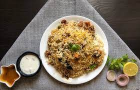

Biryani is one of the most popular dishes in South Asia, as well as among the diaspora from the region. It has gained popularity in South India, and is also prepared in other parts of the world such as Iraqi Kurdistan. Biryani is the single most-ordered dish on Indian online food ordering and delivery services
